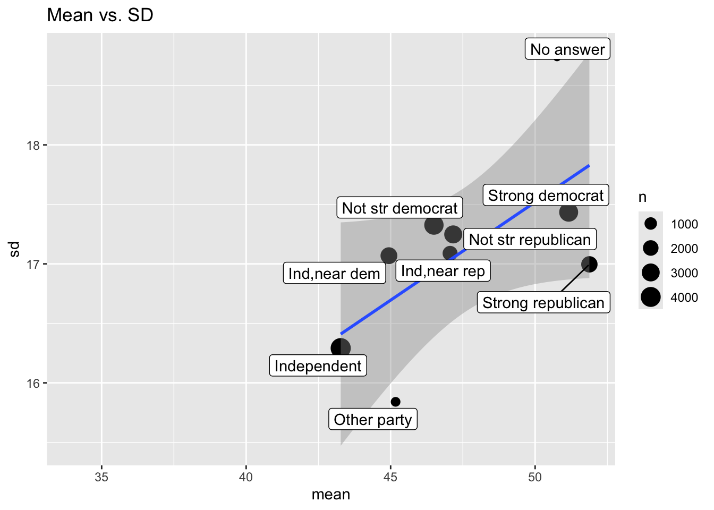

# Initial packages required (we'll be adding more)
library(tidyverse)
library(nycflights13)Functions HW
Filter/remove the NA values before rescaling
df <- tibble(
a = rnorm(10),
b = rnorm(10),
c = rnorm(10),
d = rnorm(10)
)
df$a[5] = NA
df# A tibble: 10 × 4
a b c d
<dbl> <dbl> <dbl> <dbl>
1 1.82 0.496 0.870 1.26
2 -1.98 0.631 0.803 0.297
3 -1.60 -0.428 -1.20 -0.135
4 -0.0693 0.169 -0.390 0.628
5 NA -0.757 1.48 0.534
6 -0.750 -1.44 0.281 -0.477
7 1.57 0.375 -0.271 -0.684
8 -1.75 0.738 -0.288 0.580
9 1.46 0.366 0.428 -2.03
10 -0.746 -3.82 0.480 0.289rescale_basic <- function(x) {
(x - min(x)) / (max(x) - min(x))
}
df |>
filter(!is.na(a)) |>
mutate(new_a = rescale_basic(a))# A tibble: 9 × 5
a b c d new_a
<dbl> <dbl> <dbl> <dbl> <dbl>
1 1.82 0.496 0.870 1.26 1
2 -1.98 0.631 0.803 0.297 0
3 -1.60 -0.428 -1.20 -0.135 0.0997
4 -0.0693 0.169 -0.390 0.628 0.503
5 -0.750 -1.44 0.281 -0.477 0.323
6 1.57 0.375 -0.271 -0.684 0.935
7 -1.75 0.738 -0.288 0.580 0.0597
8 1.46 0.366 0.428 -2.03 0.906
9 -0.746 -3.82 0.480 0.289 0.324 [Pause to Ponder:] Do you notice anything in the output above that gives you pause?
The filter removed the entire row for the NA value.
Create an if statement to check if there are NAs; return an error if NAs exist
First, here’s an example involving weighted means:
# Create function to calculate weighted mean
wt_mean <- function(x, w) {
sum(x * w) / sum(w)
}
wt_mean(c(1, 10), c(1/3, 2/3))[1] 7# ((1 * 1/3) + (10 * 2/3)) / (1/3 + 2/3)
wt_mean(1:6, 1:3)[1] 7.666667# ((1 * 1) + (2 * 2) + (3 * 3) + (4 * 1) + (5 * 2) + (6 * 3)) / (1 + 2 + 3)[Pause to Ponder:] Why is the answer to the last call above 7.67? Aren’t we taking a weighted mean of 1-6, all of which are below 7?
The w input (1:3) is being recycled in the numerator twice, but is not being recycled at all in the denominator. Shows you can have code with no problems but will give you the wrong answer with no alerts.
# update function to handle cases where data and weights of unequal length
wt_mean <- function(x, w) {
if (length(x) != length(w)) {
stop("`x` and `w` must be the same length", call. = FALSE)
} else {
sum(w * x) / sum(w)
}
}
wt_mean(1:6, 1:3) Error:
! `x` and `w` must be the same length# should produce an error now if weights and data different lengths
# - nice example of if and else[Pause to Ponder:] What does the call. option do?
If true, it will pinpoint exactly which function produced the error
Now let’s apply this to our rescaling function
rescale_w_error <- function(x) {
if (is.na(sum(x))) {
stop("`x` cannot have NAs", call. = FALSE)
} else {
(x - min(x)) / (max(x) - min(x))
}
}
temp <- c(4, 6, 8, 9)
rescale_w_error(temp)[1] 0.0 0.4 0.8 1.0temp <- c(4, 6, 8, 9, NA)
rescale_w_error(temp)Error:
! `x` cannot have NAs[Pause to Ponder:] Why can’t we just use if (is.na(x)) instead of is.na(sum(x))?
We have to use the latter because it prints a number of the total NA values while is.na(x) prints a logical vector which has a length longer than 1. The condition cannot have a length greater than 1 in order for the function to run.
[Pause to Ponder:] Predict what the code below will do, and (only) then run it to check. Think about: why do we have sort = sort? why not embrace df? why didn’t we need n in the arguments?
The code below will make a function that will filter a data frame by a condition and then count the levels of the chosen variable in order to calculate the proportion of each level. We need sort = sort because the second sort will be the actual argument stated (TRUE or FALSE). The sort is there for the final output of proportions: if the user of the function does not want them sorted from higher to lower, they can state that by coding sort = FALSE. We don’t need to embrace df because it is not within a function that requires embracing. We didn’t need n in the arguments because it was produced by the count function within the new function.
new_function <- function(df, var, condition, sort = TRUE) {
df |>
filter({{ condition }}) |>
count({{ var }}, sort = sort) |>
mutate(prop = n / sum(n))
}
mpg |> new_function(var = manufacturer,
condition = manufacturer %in% c("audi",
"honda",
"hyundai",
"nissan",
"subaru",
"toyota",
"volkswagen")
)[Pause to Ponder:] Here’s another nice use of pick(). Predict what the function will do, then run the code to see if you are correct.
The new function will count both the rows and columns of the data and pivot the data to have all the values from the column to be new columns with their new values being the counts from above.
After running: I do not know what happened honestly.
# Source: https://twitter.com/pollicipes/status/1571606508944719876
new_function <- function(data, rows, cols) {
data |>
count(pick(c({{ rows }}, {{ cols }}))) |>
pivot_wider(
names_from = {{ cols }},
values_from = n,
names_sort = TRUE,
values_fill = 0
)
}
mpg |> new_function(c(manufacturer, model), cyl)
# figuring it out?
mpg |>
count(pick(c(c(manufacturer, model)), cyl)) # counts manfacturer by model and cyl?
mpg |>
count(pick(c(c(manufacturer, model)), cyl)) |>
pivot_wider(
names_from = cyl, # new column names
values_from = n, # values from the number cars (?) from each model and manufacturer
names_sort = TRUE,
values_fill = 0
)On Your Own
- Rewrite this code snippet as a function:
x / sum(x, na.rm = TRUE). This code creates weights which sum to 1, where NA values are ignored. Test it for at least two different vectors. (Make sure at least one has NAs!)
weight01 <- function(x, na.rm = FALSE) {
x / sum(x, na.rm = na.rm)
}
weight01(c(1:5, NA), na.rm = TRUE)[1] 0.06666667 0.13333333 0.20000000 0.26666667 0.33333333 NAweight01(10:20, na.rm = TRUE) [1] 0.06060606 0.06666667 0.07272727 0.07878788 0.08484848 0.09090909
[7] 0.09696970 0.10303030 0.10909091 0.11515152 0.12121212- Create a function to calculate the standard error of a variable, where SE = square root of the variance divided by the sample size. Hint: start with a vector like
x <- 0:5orx <- gss_cat$ageand write code to find the SE of x, then turn it into a function to handle any vectorx. Note:varis the function to find variance in R andsqrtdoes square root.lengthmay also be handy. Test your function on two vectors that do not include NAs (i.e. do not worry about removing NAs at this point).
se <- function(x) {
sqrt(var(x) / length(x))
}
se(1:5)[1] 0.7071068- Use your
sefunction within summarize to get a table of the mean and s.e. ofhwyandctybyclassin thempgdataset.
mpg |>
group_by(class) |>
summarize(
mean_hwy = mean(hwy),
se_hwy = se(hwy),
mean_cty = mean(cty),
se_cty = se(cty)
)# A tibble: 7 × 5
class mean_hwy se_hwy mean_cty se_cty
<chr> <dbl> <dbl> <dbl> <dbl>
1 2seater 24.8 0.583 15.4 0.245
2 compact 28.3 0.552 20.1 0.494
3 midsize 27.3 0.334 18.8 0.304
4 minivan 22.4 0.622 15.8 0.553
5 pickup 16.9 0.396 13 0.356
6 subcompact 28.1 0.909 20.4 0.778
7 suv 18.1 0.378 13.5 0.307- Use your
sefunction within summarize to get a table of the mean and s.e. ofarr_delayanddep_delayby carrier in theflightsdataset. Why does the output look like this?
Because NAs are included in the flights data so mean and se can’t be calculated.
flights |>
group_by(carrier) |>
summarize(
mean_arr_delay = mean(arr_delay),
se_arr_delay = se(arr_delay),
mean_dep_delay = mean(dep_delay),
se_dep_delay = se(dep_delay)
)# A tibble: 16 × 5
carrier mean_arr_delay se_arr_delay mean_dep_delay se_dep_delay
<chr> <dbl> <dbl> <dbl> <dbl>
1 9E NA NA NA NA
2 AA NA NA NA NA
3 AS NA NA NA NA
4 B6 NA NA NA NA
5 DL NA NA NA NA
6 EV NA NA NA NA
7 F9 NA NA NA NA
8 FL NA NA NA NA
9 HA -6.92 4.06 4.90 4.01
10 MQ NA NA NA NA
11 OO NA NA NA NA
12 UA NA NA NA NA
13 US NA NA NA NA
14 VX NA NA NA NA
15 WN NA NA NA NA
16 YV NA NA NA NA - Make your
sefunction handle NAs with an na.rm option. Test your new function (you can call itseagain) on a vector that doesn’t include NA and on the same vector with an added NA. Be sure to check that it gives the expected output with na.rm = TRUE and na.rm = FALSE. Make na.rm = FALSE the default value. Repeat #4. (Hint: be sure when you divide by sample size you don’t count any NAs)
se <- function(x, includeNAs) {
if (includeNAs) {
x <- na.omit(x)
}
sqrt(var(x) / length(x))
}
flights |>
group_by(carrier) |>
summarize(
mean_arr_delay = mean(arr_delay, na.rm = TRUE),
se_arr_delay = se(arr_delay, includeNAs = TRUE),
mean_dep_delay = mean(dep_delay, na.rm = TRUE),
se_dep_delay = se(dep_delay, includeNAs = TRUE)
)# A tibble: 16 × 5
carrier mean_arr_delay se_arr_delay mean_dep_delay se_dep_delay
<chr> <dbl> <dbl> <dbl> <dbl>
1 9E 7.38 0.381 16.7 0.348
2 AA 0.364 0.238 8.59 0.209
3 AS -9.93 1.37 5.80 1.18
4 B6 9.46 0.184 13.0 0.165
5 DL 1.64 0.203 9.26 0.182
6 EV 15.8 0.221 20.0 0.205
7 F9 21.9 2.36 20.2 2.23
8 FL 20.1 0.960 18.7 0.933
9 HA -6.92 4.06 4.90 4.01
10 MQ 10.8 0.273 10.6 0.247
11 OO 11.9 9.02 12.6 8.00
12 UA 3.56 0.170 12.1 0.148
13 US 2.13 0.235 3.78 0.199
14 VX 1.76 0.699 12.9 0.626
15 WN 9.65 0.427 17.7 0.394
16 YV 15.6 2.27 19.0 2.11 # another approach
se <- function(x, na.rm = FALSE) {
n <- length(x) - sum(is.na(x)) # makes the sample size accurate by removing the number of NAs
sqrt(var(x, na.rm = na.rm) / n)
}
se(c(1:5, NA), na.rm = TRUE)[1] 0.7071068flights |>
group_by(carrier) |>
summarize(
mean_arr_delay = mean(arr_delay, na.rm = TRUE),
se_arr_delay = se(arr_delay, na.rm = TRUE),
mean_dep_delay = mean(dep_delay, na.rm = TRUE),
se_dep_delay = se(dep_delay, na.rm = TRUE)
)# A tibble: 16 × 5
carrier mean_arr_delay se_arr_delay mean_dep_delay se_dep_delay
<chr> <dbl> <dbl> <dbl> <dbl>
1 9E 7.38 0.381 16.7 0.348
2 AA 0.364 0.238 8.59 0.209
3 AS -9.93 1.37 5.80 1.18
4 B6 9.46 0.184 13.0 0.165
5 DL 1.64 0.203 9.26 0.182
6 EV 15.8 0.221 20.0 0.205
7 F9 21.9 2.36 20.2 2.23
8 FL 20.1 0.960 18.7 0.933
9 HA -6.92 4.06 4.90 4.01
10 MQ 10.8 0.273 10.6 0.247
11 OO 11.9 9.02 12.6 8.00
12 UA 3.56 0.170 12.1 0.148
13 US 2.13 0.235 3.78 0.199
14 VX 1.76 0.699 12.9 0.626
15 WN 9.65 0.427 17.7 0.394
16 YV 15.6 2.27 19.0 2.11 - Create
both_na(), a function that takes two vectors of the same length and returns how many positions have an NA in both vectors. Hint: create two vectors liketest_x <- c(1, 2, 3, NA, NA)andtest_y <- c(NA, 1, 2, 3, NA)and write code that works fortest_xandtest_y, then turn it into a function that can handle anyxandy. (In this case, the answer would be 1, since both vectors have NA in the 5th position.) Test it for at least one more combination ofxandy.
both_na <- function(x, y) {
sum(is.na(x) & is.na(y))
}
test_x <- c(1, 2, 3, NA, NA)
test_y <- c(NA, 1, 2, 3, NA)
test_a <- c(NA, NA, NA, 7, 21, 38)
test_b <- c(4, NA, NA, 21, NA, 78)
both_na(test_x, test_y)[1] 1both_na(test_a, test_b)[1] 2- Run your code from (6) with the following two vectors:
test_x <- c(1, 2, 3, NA, NA, NA)andtest_y <- c(NA, 1, 2, 3, NA). Did you get the output you wanted or expected? Modify your function usingif,else, andstopto print an error if x and y are not the same length. Then test again withtest_x,test_yand the sets of vectors you used in (6).
test_x2 <- c(1, 2, 3, NA, NA, NA)
test_y2 <- c(NA, 1, 2, 3, NA)
both_na(test_x2, test_y2) Warning in is.na(x) & is.na(y): longer object length is not a multiple of
shorter object length[1] 2both_na <- function(x, y) {
if(length(x) != length(y)) {
stop("`x` and `y` must be the same length", call. = FALSE)
} else{sum(is.na(x) & is.na(y))
}
}
both_na(test_x, test_y)[1] 1- Here is a way to get
not_cancelledflights in the flights dataset:
not_cancelled <- flights |>
filter(!is.na(dep_delay), !is.na(arr_delay))Is it necessary to check is.na for both departure and arrival? Using summarize, find the number of flights missing departure delay, arrival delay, and both. (Use your new function!)
It is not necessary to check for the not cancelled flights as there would be no missing values for those columns.
not_cancelled |>
summarize(missing_dep = sum(is.na(dep_delay)),
missing_arr = sum(is.na(arr_delay)),
missing_both = both_na(dep_delay, arr_delay))# A tibble: 1 × 3
missing_dep missing_arr missing_both
<int> <int> <int>
1 0 0 0flights |>
summarize(missing_dep = sum(is.na(dep_delay)),
missing_arr = sum(is.na(arr_delay)),
missing_both = both_na(dep_delay, arr_delay))# A tibble: 1 × 3
missing_dep missing_arr missing_both
<int> <int> <int>
1 8255 9430 8255- Read the code for each of the following three functions, puzzle out what they do, and then brainstorm better names.
f1 <- function(time1, time2) {
hour1 <- time1 %/% 100
min1 <- time1 %% 100
hour2 <- time2 %/% 100
min2 <- time2 %% 100
(hour2 - hour1)*60 + (min2 - min1)
}
f2 <- function(lengthcm, widthcm) {
(lengthcm / 2.54) * (widthcm / 2.54)
}
f3 <- function(x) {
fct_collapse(x, "non answer" = c("No answer", "Refused",
"Don't know", "Not applicable"))
}f1 overall finds the differences in times in minutes by calculating the remainder of the time (for both times) after being divided by 100 and labeling it hour, calculating the time divided by 100 and rounding down and labeling it min. Finally, the hours are subrated from each other and multiplied by 60 and added to the difference in the minutes. A better name for the function would be diff_time_min.
f2 converts length and width in centimeters into inches and multiplies the two by each other to find the area of the object. A better name for this function would be area_in.
f3 collapses all responses that reveal no answer to the question into a “non answer” category. A better name for this function would be collapse_na.
- Explain what the following function does and demonstrate by running
foo1(x)with a few appropriately chosen vectorsx. (Hint: set x and run the “guts” of the function piece by piece.)
foo1 <- function(x) {
diff <- x[-1] - x[1:(length(x) - 1)]
sum(diff < 0)
}
# figuring out the function
x <- c(-11, 2, 33, 4, -55, 6, 77, 8, 99, 10)
x[-1][1] 2 33 4 -55 6 77 8 99 10x[1:length(x) - 1][1] -11 2 33 4 -55 6 77 8 99difffunction (x, ...)
UseMethod("diff")
<bytecode: 0x113de4bd0>
<environment: namespace:base>x <- c(-11, 2, 33, 4, -55, 6, 77, 8, 99, 10)
foo1(x)[1] 4# vectors
x <- c(-11, 2, 33, 4, -55, 6, 77, 8, 99, 10)
foo1(x)[1] 4y <- c(-20, 17, 13, -19, -4, 7)
foo1(y)[1] 2foo1 first finds the difference between x with its first value removed and x with its last value removed. The function the finds the sum of differences that are less than 0.
- The
foo1()function doesn’t perform well if a vector has missing values. Amendfoo1()so that it produces a helpful error message and stops if there are any missing values in the input vector. Show that it works with appropriately chosen vectorsx. Be sure you adderror = TRUEto your R chunk, or else knitting will fail!
foo1 <- function(x) {
if(is.na(sum(x))) {
stop("`x` cannot have NAs", call. = FALSE)
} else {
diff <- x[-1] - x[1:(length(x) - 1)]
sum(diff < 0)
}
}
z <- c(1, NA, 2, 5, 17, NA)
foo1(z)- Write a function called
greetusingif,else if, andelseto print out “good morning” if it’s before 12 PM, “good afternoon” if it’s between 12 PM and 5 PM, and “good evening” if it’s after 5 PM. Your function should work if you input a time like:greet(time = "2018-05-03 17:38:01 CDT")or if you input the current time withgreet(time = Sys.time()). [Hint: check out thehourfunction in thelubridatepackage]
ask cole
- Modify the
summary6()function from earlier to add an argument that gives the user an option to remove missing values, if any exist. Show that your function works for (a) thehwyvariable inmpg_tbl <- as_tibble(mpg), and (b) theagevariable ingss_cat.
summary6 <- function(data, var, na.rm = FALSE) {
data |> summarize(
mean = mean({{ var }}, na.rm = na.rm),
median = median({{ var }}, na.rm = na.rm),
sd = sd({{ var }}, na.rm = na.rm),
IQR = IQR({{ var }}, na.rm = na.rm),
n = n(),
n_miss = sum(is.na({{ var }})),
.groups = "drop" # to leave the data in an ungrouped state
)
}
mpg_tbl <- as_tibble(mpg)
mpg_tbl |>
summary6(hwy, na.rm = TRUE)# A tibble: 1 × 6
mean median sd IQR n n_miss
<dbl> <dbl> <dbl> <dbl> <int> <int>
1 23.4 24 5.95 9 234 0gss_cat |>
summary6(age, na.rm = TRUE)# A tibble: 1 × 6
mean median sd IQR n n_miss
<dbl> <int> <dbl> <dbl> <int> <int>
1 47.2 46 17.3 26 21483 76- Add an argument to (13) to produce summary statistics by group for a second variable (you should now have 4 possible inputs to your function). Show that your function works for (a) the
hwyvariable inmpg_tbl <- as_tibble(mpg)grouped bydrv, and (b) theagevariable ingss_catgrouped bypartyid.
summary6 <- function(data, var, group, na.rm = FALSE) {
data |>
group_by({{ group }}) |>
summarize(
mean = mean({{ var }}, na.rm = na.rm),
median = median({{ var }}, na.rm = na.rm),
sd = sd({{ var }}, na.rm = na.rm),
IQR = IQR({{ var }}, na.rm = na.rm),
n = n(),
n_miss = sum(is.na({{ var }})),
.groups = "drop" # to leave the data in an ungrouped state
)
}
mpg_tbl |>
summary6(hwy, drv, na.rm = TRUE)# A tibble: 3 × 7
drv mean median sd IQR n n_miss
<chr> <dbl> <dbl> <dbl> <dbl> <int> <int>
1 4 19.2 18 4.08 5 103 0
2 f 28.2 28 4.21 3 106 0
3 r 21 21 3.66 7 25 0gss_cat |>
summary6(age, partyid, na.rm = TRUE)# A tibble: 10 × 7
partyid mean median sd IQR n n_miss
<fct> <dbl> <dbl> <dbl> <dbl> <int> <int>
1 No answer 50.8 48 18.7 28 154 9
2 Don't know 34 34 NA 0 1 0
3 Other party 45.2 44.5 15.8 23 393 3
4 Strong republican 51.9 51 17.0 26 2314 8
5 Not str republican 47.2 45 17.2 26 3032 8
6 Ind,near rep 47.1 46 17.1 27 1791 2
7 Independent 43.3 41 16.3 24 4119 18
8 Ind,near dem 44.9 43 17.1 27 2499 2
9 Not str democrat 46.5 44 17.3 26.5 3690 11
10 Strong democrat 51.2 50 17.4 27 3490 15- Create a function that has a vector as the input and returns the last value. (Note: Be sure to use a name that does not write over an existing function!)
change function name, finish
last_value <- function(x) {
}- Save your final table from (14) and write a function to draw a scatterplot of a measure of center (mean or median - user can choose) vs. a measure of spread (sd or IQR - user can choose), with points sized by sample size, to see if there is constant variance. Each point should be labeled with partyid, and the plot title should reflect the variables chosen by the user.
Hint: start with a ggplot with no user input, and then functionize:
fix title issue
- I don’t know how to have the title be the variables selected without manually creating a title
library(ggrepel)
party_age |>
ggplot(aes(x = mean, y = sd)) +
geom_point(aes(size = n)) +
geom_smooth(method = lm) +
geom_label_repel(aes(label = partyid)) +
labs(title = "Mean vs SD")library(ggrepel)
party_age <-
as_tibble (gss_cat |> summary6(age, partyid, na.rm = TRUE))
party_plot <- function(data, center, spread, size, label, title) {
ggplot(data, aes(x = {{ center }}, y = {{ spread }})) +
geom_point(aes(size = {{ size }})) +
geom_smooth(method = lm) +
geom_label_repel(aes(label = {{ label }})) +
labs(title = title)
}
party_age |>
party_plot(mean, sd, n, partyid, title = "Mean vs. SD")`geom_smooth()` using formula = 'y ~ x'Warning: Removed 1 row containing non-finite outside the scale range
(`stat_smooth()`).Warning: Removed 1 row containing missing values or values outside the scale range
(`geom_point()`).Warning: Removed 1 row containing missing values or values outside the scale range
(`geom_label_repel()`).